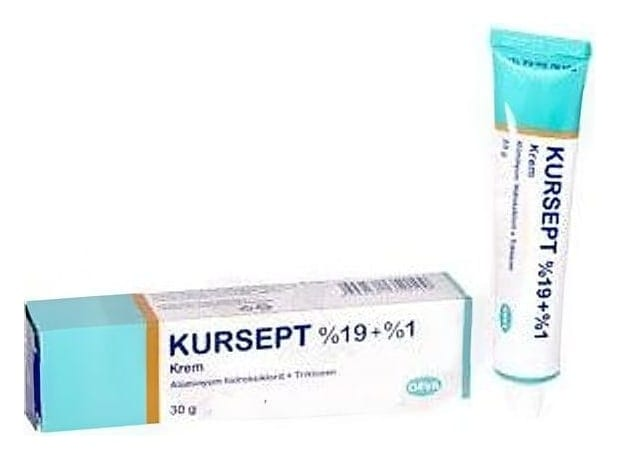

Kursept %19 + %1 Krem (30 g)

Ne için kullanılır
KT · Bölüm 1KURSEPT, deriye sürerek kullanılan bir kremdir. Antihidrotikler olarak adlandırılan bir ilaç grubuna dahildir. Etkin madde olarak, 1 gramında 190 mg alüminyum hidroksiklorit ve 10 mg triklozan içermektedir. Alüminyum hidroksiklorit, terlemeyi önleyici, bakterilere ve mantarlara karşı etkili bir bileşiktir. Triklozan ise bakterilere, bazı maya ve küflere karşı etkili; antimikrobiyal bir maddedir. Triklozan ayrıca iltihap giderici özelliklere de sahiptir. KURSEPT, hafif parfüm kokulu, beyaz renkli, bağdaşık (homojen) özelliklerde olup, 30 g krem içeren alüminyum tüplerde bulunmaktadır. KURSEPT, antimikrobiyal bir etkinin de gerekli görüldüğü her türlü aşırı terlemenin (hiperhidrozis) tedavisinde; özellikle koltuk altı, ayak ve ellerde görülen aşırı terleme ve buna bağlı gelişen koku yayılmasına karşı; ayrıca vücudun kıvrımlı yerlerinde oluşan yüzeysel iltihapların (intertrigo) ve yürüyüşe bağlı olarak ayaklarda oluşabilen içi sıvı dolu kabarcıkların önlenmesinde kullanılır.